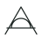
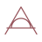
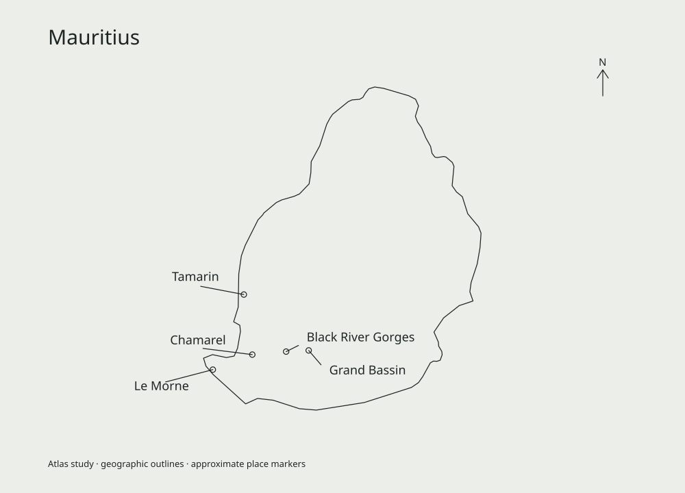

Een nieuwe ochtend
Ruimte is het vertrekpunt
AURORA Private is een traject van zes maanden voor persoonlijk herstel en verandering, met veertien dagen op locatie als keerpunt. Vier bestemmingen; Bonaire is Editie 01.
De merkgedachte
Een sanctuary, geen kliniek.
Het gevoel
Rustig, menselijk, discreet. Kwaliteit die je ervaart in aandacht en materiaal.
De belofte in communicatie
Ruimte en persoonlijke aandacht. Geen beloofde uitkomst.
Voor mensen met een eigen verhaal
Ondernemers
Schrijf met respect voor verantwoordelijkheid en zelfstandigheid. Vermijd taal die van prestaties een diagnose maakt.
Publieke personen
Laat discretie zien in afstand, besloten ruimtes en terughoudende fotografie.
Particuliere cliënten
Spreek iemand aan als persoon. Gebruik heldere woorden en laat ruimte voor vragen.
Naasten en organisaties
Twee ingangen voor wie niet zelf de deelnemer is. Meedoen blijft altijd een eigen keuze van de deelnemer.
De signatuur
Het monogram: de A, de horizon en de opkomende boog vormen samen het beeldmerk. Het woordmerk staat in Jost Light met ruime spatiëring; PRIVATE op een rustige tweede regel. Varianten: Ink op Salt, Salt op Ink. Eénkleurig gebruik heeft de voorkeur; Aurora Red alleen voor het monogram als gemarkeerd moment.



Ruimte rond het merk
Vrije ruimte
Rond het monogram minimaal een kwart van de totale hoogte. Rond het woordmerk minimaal de hoogte van de P in PRIVATE.
Minimale maat
Monogram 24 px digitaal of 8 mm in druk. Woordmerk 140 px digitaal of 35 mm in druk.
Wel
Eén kleur. Rustige achtergrond. Vaste verhoudingen. Originele SVG.
Niet
Uitrekken, schaduw toevoegen, letters herschikken of het merk op drukke details plaatsen.
De kernkleuren
Ink en Salt dragen de compositie. Tide stuurt de interactie. Dune ondersteunt lijnwerk. First Light en Aurora Red markeren geselecteerde momenten.
#1E2624#ECEEEA#3D6766#B7A68A#D8BBA6#97555CContrast
Ink op Salt 13,24:1. Salt op Tide 5,40:1. Salt op Aurora Red 4,77:1. Dune op Salt 2,04:1, dus nooit voor gewone kleine tekst.
Het rood vóór de zonsopkomst
Aurora Red is een herkenbaar terugkerend moment in de materialen. Laat het ontstaan in wolken, reflecties, licht of een klein materiaaldetail. Houd koele schaduwen en de eigen kleuren van een bestemming zichtbaar.
Website: bij de opening, in het verhaal en bij de afsluiting. Deck: ongeveer elke 3–4 dia’s een rood moment. In accentbeelden mag circa 15–25% rood of rose dragen; een richting, geen pixelregel. Geen universele rode tint, geen neon, geen noorderlicht, geen oranje kleurwas.
Vier eigen kleuren
#2F7F86Caribische ruimte
#B98A4EAan de voet van de Himalaya
#4C7A5CLagune en vulkanisch groen
#A9764FAndalusische ochtenden
De locatiekleur ondersteunt fotografie en illustratie. Het globale merk en de hoofdinteractie blijven Ink, Salt en Tide.
Typografie met rust
Aa Bb Cc 0123
Aandacht begint bij woorden die je zonder moeite kunt lezen.
Website: body 18 px, labels 14 px, grote koppen 56–120 px responsief. Deck: koppen 72–96 px, body 28–34 px op 1920 × 1080. Fonts zelf gehost (SIL Open Font License).
Licht, materiaal en afstand
Fotografische taal
Gevoel van 35 of 50 mm full-frame. Natuurlijk licht, eerlijke schaduwen, zachte highlights en fijne korrel. Asymmetrisch, met ruimte voor de omgeving.
Menselijke aanwezigheid
Ruggen, handen en kleine figuren op afstand. Geen herkenbare cliënten die voor de camera poseren. Geen persoonsportretten bij de herkenningssectie.
Vermijden
HDR, oranje kleurfilters, lens flare, wellnessposes, klinische clichés en een gladde reclameafwerking.
Waarheidsgetrouw gebruik
Gegenereerde beelden zijn sfeerconcepten. Gebruik echte, gelicentieerde fotografie voor concrete accommodaties, medewerkers en herkenbare monumenten.
Dutch atlas line
Fijn, rustig en éénkleurig. Ink of Dune op Salt. Kaarten, contouren en programmaglyphs delen dezelfde ingetogen logica. Kaarten circa 1,25 px op 1000 px breed; UI-iconen 1,5 px op een raster van 24 px met afgeronde uiteinden.



Kaarten die nog niet in deze build staan, worden verborgen tot de bestanden uit de kit zijn geïmporteerd.
Een rustige compositie
Website
Eén sterk beeld per scherm. Maximaal 1280 px contentbreedte. 64–96 px tussen hoofdsecties. Mobiel 24 px zijmarge.
Presentatie
16:9, 1920 × 1080, marges 120 px horizontaal en 90 px verticaal, 12 kolommen. Eén hoofdgedachte per dia. Wissel fotografie af met rustige informatiepagina’s.
Social
Beeld, één kop, klein merk. Tekst binnen een veilige marge van 8%. Houd tekst los van de foto.
Menselijk en helder
Je hoeft nog niet alle antwoorden te hebben.
Een eerste gesprek geeft ruimte om vragen te stellen.
Zo schrijven we
Korte zinnen. Je en jouw. Rustig en direct. Concreet over de ervaring, zorgvuldig over het resultaat.
Wel
traject, begeleiding, keerpunt, herstel van ritme, patronen, verantwoordelijkheid.
Niet
gegarandeerd herstel, beste kliniek, exclusieve genezing, detox, ontwenning, behandeling, therapie als belofte, overdreven luxeclaims of oncontroleerbare superlatieven.
Interacties zonder druk
Knoppen
Tide achtergrond, Salt tekst. Rechte hoeken, rustige padding. Eén primaire actie per sectie.
Formulieren
Zichtbare labels, duidelijke foutmeldingen en alleen noodzakelijke velden. Een succesmelding volgt pas op een echte verzending; de huidige intake is een voorvertoning die niets verstuurt.
Toegankelijkheid
Minimaal 4,5:1 contrast voor gewone tekst en 3:1 voor grote tekst. Zichtbare focus. Snel weg met Esc op alle publieke pagina’s.
Beweging
Overgangen rond 240 ms. Geen verplichte scrollanimaties. Reduced motion wordt gerespecteerd.
Een samenhangende beeldwereld
Website
Open zee op de home. Een eigen ochtend voor elke bestemming. Atlas en traject als rustige inhoudelijke laag.
Pitch
Een sterke opening, heldere propositie, het traject en de bestemmingen. Operationele beslissingen krijgen aparte ruimte.
Social
Wissel een bestemming af met een rustige gedachte of een programmamoment. Geef iedere post één reden om te bestaan.
Hoe het traject in het merk staat
Het programma is een traject van zes maanden: ± 4 weken voorbereiding, 14 dagen op locatie, ± 5 maanden integratie. De vijf programmanamen uit de kit (Aankomst, Stilte, Inzicht, Kracht, Terugkeer) zijn de vijf bewegingen van dat traject, elk met een eigen glyph. Ze zijn geen weken.
Kernzin, op elke pagina: Zes maanden persoonlijke begeleiding, met veertien dagen op locatie als keerpunt.
Prijs: niet in de hero, wel als “€17.500, het volledige traject van zes maanden”. Nooit als prijs voor de veertien dagen.
Klaar voor gebruik
In deze kit
Websitevoorstellen, een conceptpitch, tokens, fonts, atlasgrafiek, fotografie en bewerkbare social templates.
Voor publieke lancering
Bevestig team, aanbod, tarieven en contactroute. Controleer de rechten en juistheid van echte locatiebeelden. Laat de grens-tekst juridisch toetsen.
Versiebeheer
Behoud de huidige kernkleuren en programmanamen. Voeg nieuwe voorbeelden toe met datum en toepassing. Versie 1.1, 8 oktober 2026: Programma 2.0 doorgevoerd, morning red per sectie vastgelegd.